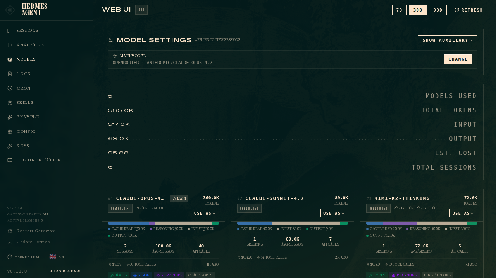
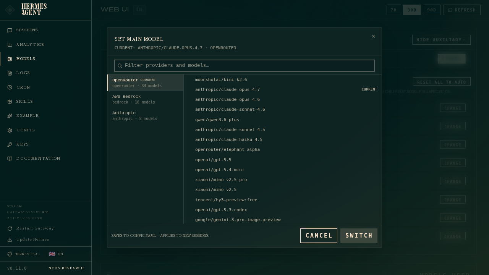
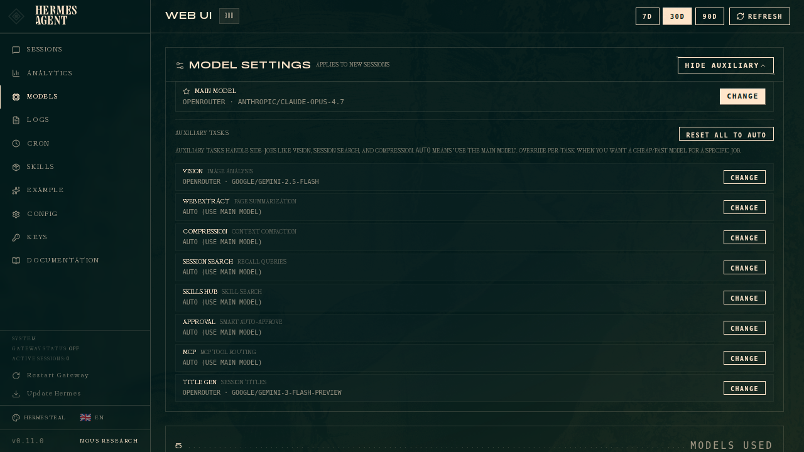
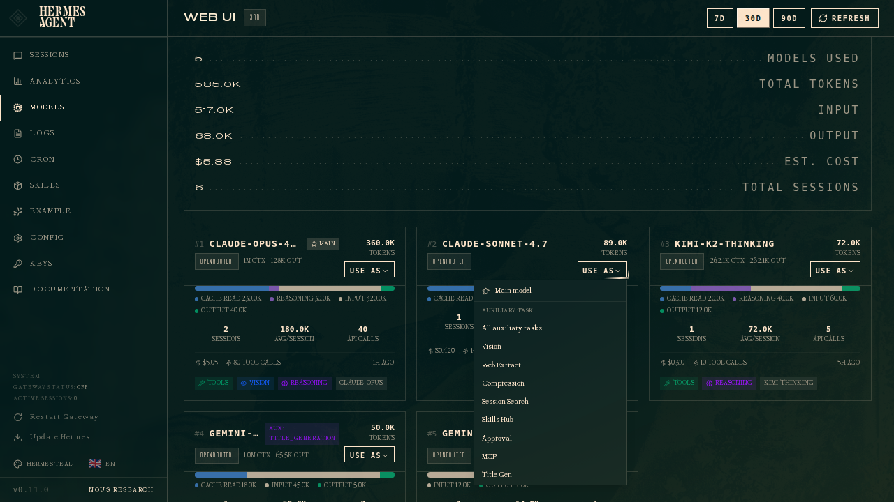

Configuring Models
Hermes uses two kinds of model slots:
- Main model — what the agent thinks with. Every user message, every tool-call loop, every streamed response goes through this model.
- Auxiliary models — smaller side-jobs the agent offloads. Context compression, vision (image analysis), web-page summarization, approval scoring, MCP tool routing, session-title generation, and skill search. Each has its own slot and can be overridden independently.
This page covers configuring both from the dashboard. If you prefer config files or the CLI, jump to Alternative methods at the bottom. To run models on your own machine instead of a cloud provider, see Local Models.
Fastest path: Nous Portal
Nous Portal provides 300+ models under one subscription. On a fresh install, run hermes setup --portal to log in and set Nous as your provider in one command. Inspect what's wired up with hermes portal info.
- Portal subscribers also get 10% off token-billed providers.
`model:` schema — empty string vs. mapping
On a brand-new install the bundled default config has model: "" (an empty string sentinel meaning "not configured yet"). The first time you run hermes setup or hermes model, that key is upgraded in-place to a mapping with provider, default, base_url, and api_mode sub-keys — the shape shown throughout this page and in profiles.md / configuration.md. If you ever see an empty string in config.yaml, run hermes model (or click Change in the dashboard) and Hermes will write the dict form for you.
The Models page
Open the dashboard and click Models in the sidebar. You get two sections:
- Model Settings — the top panel, where you assign models to slots.
- Usage analytics — ranked cards showing every model that ran a session in the selected period, with token counts, cost, and capability badges.

The top card is the Model Settings panel. The main row always shows what the agent will spin up for new sessions. Click Change to open the picker.
Setting the main model
Click Change on the Main model row:

The picker has two columns:
- Left — authenticated providers. Only providers you've set up (API key set, OAuth'd, or defined as a custom endpoint) show up here. If a provider is missing, head to Keys and add its credential.
- Right — the curated model list for the selected provider. These are the agentic models Hermes recommends for that provider, not the raw
/modelsdump (which on OpenRouter includes 400+ models including TTS, image generators, and rerankers).
Type in the filter box to narrow by provider name, slug, or model ID.
Pick a model, hit Switch, and Hermes writes it to ~/.hermes/config.yaml under the model section. This applies to new sessions only — any chat tab you already have open keeps running whatever model it started with. To hot-swap the current chat, use the /model slash command inside it.
Mid-session switches and context warnings
When you switch models inside an active session (Herm TUI model picker, hermes CLI, or /model on Telegram/Discord), Hermes estimates whether your next message will run preflight context compression against the new model's window. If the session is already near or above that model's compression threshold (see Context Compression), the switch reply includes a warning — the same warning_message path used for expensive-model notices. The switch still applies immediately; compression runs on the first user message after the switch, before the model answers.
Mid-session switches reset the prompt cache
Prompt caches are keyed to the model serving the request, so any mid-conversation model change — an explicit /model switch, an automatic fallback, or a credential-pool rotation onto a different account — means the next message re-reads the entire conversation at full input-token price instead of the cached (~75–90% discounted) rate. On a long session this one-time re-read can dwarf the per-token difference between the two models. Switch when you need to, but prefer doing it early in a conversation or right after starting a fresh session.
Because of that one-time re-read cost, Hermes asks for explicit confirmation before applying a mid-session switch when the live session already holds a large context (default: 100,000 tokens, measured from the latest provider-billed prompt size). The confirmation renders through the same selection-guard prompt as the expensive-model and data-training warnings wherever a live session is switching: the CLI and TUI /model command and picker, and a typed gateway /model in a chat with an active agent. Tune or disable it in config.yaml:
model:
# Ask before mid-session switches when the session exceeds this many
# context tokens (the next reply re-reads them uncached). 0 disables.
switch_context_confirm_tokens: 100000
Re-selecting the model you're already on never prompts (the cache stays warm), and sessions with no measured context (fresh sessions, non-live surfaces) are exempt.
Unattended data-training tiers
Models with a -contributor suffix (e.g. muse-spark-1.2-contributor, muse-spark-1.3-contributor) are discounted because the vendor may train on your prompts and completions. Interactive model selection always shows a confirmation prompt. Non-interactive startup paths such as Kanban workers and cron agents fail closed because they cannot ask that question.
If training on the unattended workload's data is acceptable, record a persistent acknowledgement:
hermes config set security.allow_data_training_tiers_noninteractive true
Hermes still prints the full data-policy warning and the acknowledgement key on every unattended startup, so worker logs retain an audit trail. This setting does not approve expensive-model or provider-routing warnings, and it does not replace the interactive confirmation prompt. Revoke it with hermes config unset security.allow_data_training_tiers_noninteractive.
Setting auxiliary models
Click Show auxiliary to reveal the 11 task slots:

Every auxiliary task defaults to auto — meaning Hermes tries your main model for that job too. If that route is unavailable or hits a capacity-style failure, auto follows any task-specific auxiliary.<task>.fallback_chain, then the main fallback_providers / fallback_model chain. It never guesses a provider you did not configure: with a main provider selected and no fallback declared, the side task is skipped with a warning rather than billed to another account you happen to be logged into. (Hermes' built-in discovery chain only runs when no main provider is selected at all.) Override a specific task when you want a cheaper or faster model for a side-job.
Common override patterns
| Task | When to override |
|---|---|
| Title Gen | When title latency or cost matters more than matching the main model. Pin a known-good flash model, or set auxiliary.title_generation.prefer_fast_model: true to let Hermes choose the provider's fast tier. |
| Vision | When your main model lacks vision support. Point it at google/gemini-2.5-flash or gpt-4o-mini. |
| Compression | When you're burning reasoning tokens on Opus/M2.7 just to summarize context. A fast chat model does the job at 1/50th the cost. |
| Approval | For approval_mode: smart — a fast/cheap model (haiku, flash, gpt-5-mini) decides whether to auto-approve low-risk commands. Expensive models here are waste. |
| Web Extract | When you use web_extract heavily. Same logic as compression — summarization doesn't need reasoning. |
| Skills Hub | hermes skills search uses this. Usually fine at auto. |
| MCP | MCP tool routing. Usually fine at auto. |
| Triage Specifier | Routes the Kanban triage specifier (hermes kanban specify) that expands a rough one-liner into a concrete spec. A cheap, capable model works well. |
| Kanban Decomposer | Routes Kanban task decomposition — splits a triage task into a graph of child tasks for specialist profiles. |
| Profile Describer | Routes profile-description generation (hermes profile describe --auto / the dashboard auto-generate button). Short, cheap call. |
| Curator | Routes the curator skill-usage review pass. Can run for minutes on reasoning models, so a cheaper aux model is often worthwhile. |
Per-task override
Click Change on any auxiliary row. Same picker opens, same behavior — pick provider + model, hit Switch. The row updates to show provider · model instead of auto (use main model).
Reset all to auto
If you've over-tuned and want to start over, click Reset all to auto at the top of the auxiliary section. Every slot goes back to using your main model.
The "Use as" shortcut
Every model card on the page has a Use as dropdown. This is the fast path — pick a model you see in your analytics, click Use as, and assign it to the main slot or any specific auxiliary task in one click:

The dropdown has:
- Main model — same as clicking Change on the main row.
- All auxiliary tasks — assigns this model to all 11 aux slots at once. Useful when you just want every side-job on a cheap flash model.
- Individual task options — Vision, Web Extract, Compression, etc. The currently-assigned model for each task is marked
current.
Cards are badged with main or aux · <task> when they're currently assigned to something — so you can see at a glance which of your historical models are wired in where.
What gets written to config.yaml
When you save via the dashboard, Hermes writes to ~/.hermes/config.yaml:
Main model:
model:
provider: openrouter
default: anthropic/claude-opus-4.7
base_url: '' # cleared on provider switch
api_mode: chat_completions
Auxiliary override (example — vision on gemini-flash):
auxiliary:
vision:
provider: openrouter
model: google/gemini-2.5-flash
base_url: ''
api_key: ''
timeout: 120
extra_body: {}
download_timeout: 30
Auxiliary on auto (default):
auxiliary:
compression:
provider: auto
model: ''
base_url: ''
# ... other fields unchanged
provider: auto with model: '' tells Hermes to use the main model for that task, while still honoring fallback policy if the main route cannot serve the auxiliary call.
Optional task-specific fallback chains live under the same auxiliary task:
auxiliary:
title_generation:
provider: auto
model: ''
fallback_chain:
- provider: openrouter
model: inclusionai/ring-2.6-1t:free
When fallback_chain is absent, auto uses the top-level fallback_providers chain. If that is also absent and the main provider cannot serve the call, the task is skipped with a warning — Hermes does not fall through to other logged-in providers.
Per-provider request options
Provider entries (providers.<name> in the providers: dict, or items in the legacy custom_providers list) accept knobs that shape how Hermes talks to the endpoint:
extra_headers — a mapping of extra HTTP headers attached to every LLM request routed to that provider's base URL. They are applied last, after URL/profile defaults and user header overrides, so they survive credential swaps and client rebuilds. Useful for Cloudflare Access service tokens, proxy auth, or custom bearer schemes:
providers:
my-gateway:
api: https://llm.internal.example.com/v1
api_key: sk-...
extra_headers:
CF-Access-Client-Id: "xxxx.access"
CF-Access-Client-Secret: "yyyy"
Header values routinely carry credentials — Hermes never logs them. extra_headers applies to OpenAI-compatible routes and to anthropic_messages routes (the main client, /model switches, rebuilds and auxiliary clients alike); bedrock_converse does not use it. A relay behind a WAF that rejects the SDK's default User-Agent (403 "Your request was blocked" or a browser-challenge page) is the typical reason to set one — Hermes reports such a 403 as a firewall/CDN block rather than an API-key rejection.
session_affinity_header — the NAME of a header that carries Hermes' conversation id on every request to that provider (main turn on chat_completions, anthropic_messages and codex_responses, plus auxiliary calls such as compression and titles). Off unless set — Hermes never sends a session identifier to an endpoint that did not ask for one. Session-aware proxies fronting a stateful backend (LiteLLM's x-litellm-session-id, self-hosted Claude/OpenAI gateways) otherwise have nothing to correlate an agent loop on and treat nearly every request as a new conversation, re-sending the whole history upstream on each turn. The value is opaque, stable across the turns of one conversation (including compaction), and different for every conversation:
providers:
my-proxy:
api: http://127.0.0.1:4000/v1
api_key: sk-...
session_affinity_header: x-litellm-session-id
discover_models — set to false (default true) to skip querying the endpoint's /models listing and use only the models you configured on the entry. Handy for gateways whose model listing is slow, unreliable, or noisy:
providers:
my-gateway:
api: https://llm.internal.example.com/v1
discover_models: false
models:
- my-finetune-v2
- my-finetune-v1
With discovery off, the model picker (hermes model, /model) shows the configured list instead of a live probe.
openai_native_compaction — set this capability to true only for an OpenAI-compatible endpoint that you trust with conversation content. Native compaction sends its payload to that provider's configured base_url:
providers:
trusted-proxy:
api: https://llm.internal.example.com/v1
capabilities:
openai_native_compaction: true
For a gateway that resolves a bare model alias only after receiving the
request, opt the alias into prompt-cache markers with the per-model
prompt_caching capability:
providers:
model-proxy:
api: https://gateway.example.com/v1
transport: openai_chat # or anthropic_messages
models:
fable:
context_length: 1000000
prompt_caching: true
Hermes matches this declaration to the exact provider route and runtime model
id, without rewriting the alias or inferring support from its provider name,
host, or model family. The marker layout follows the configured transport:
openai_chat uses the OpenAI-compatible envelope layout and
anthropic_messages uses the native inner-block layout. Set
prompt_caching: false to explicitly disable cache markers for a model; when
omitted, Hermes keeps its normal provider and model capability detection.
Legacy format
Older configs used a top-level custom_providers: list (with base_url instead of api). It still works and is auto-migrated to the providers: dict on hermes update (config v12).
Nous Portal: which wire carries Claude
Nous Portal serves its anthropic/* models on two routes: OpenAI-compatible /v1/chat/completions and the native Anthropic Messages wire /v1/messages. nous.anthropic_wire picks one:
nous:
anthropic_wire: chat # default. "native" = the Anthropic Messages wire; "auto" = decide per session
chat is the default for now. The native wire is the better transport (signed thinking blocks pass through unchanged, native cache_control scopes), but on the Portal's OpenRouter-served path it currently re-writes the previous turn's prompt cache on 14–20% of consecutive calls in concurrent tool loops, which is 15–20% of a fan-out's cache-write bill; the chat route measured 0 on the same test. Set native to opt back in (for example once the portal-side fix has shipped). Only anthropic/* models are affected; everything else on Nous already uses chat/completions.
auto is for when the Portal serves the same model from more than one upstream. A session starts on chat, Hermes reads which upstream answered the first call, and switches that session to native only when the upstream is one where native is known to be clean (the switch happens between calls, so no in-flight response and no warm cache is lost). Today no upstream is cleared, so auto behaves exactly like chat; it exists so the flip can be made from a measurement rather than a config change.
When does it take effect?
- CLI (
hermes chat): nexthermes chatinvocation. - Gateway (Telegram, Discord, Slack, etc.): next new session. Existing sessions keep their model. Restart the gateway (
hermes gateway restart) if you want to force all sessions to pick up the change. - Dashboard chat tab (
/chat): next new PTY. The currently-open chat keeps its model — use/modelinside it to hot-swap.
Changes never invalidate prompt caches on running sessions. That's deliberate: swapping the main model inside a session requires a cache reset (the system prompt contains model-specific content), and we reserve that for the explicit /model slash command inside chat.
Troubleshooting
"No authenticated providers" in the picker
Hermes lists a provider only if it has a working credential. Check Keys in the sidebar — you should see one of: an API key, a successful OAuth, or a custom endpoint URL. If the provider you want isn't there, run hermes setup to wire it up, or go to Keys and add the env var.
Main model didn't change in my running chat
Expected. The dashboard writes config.yaml, which new sessions read. The currently-open chat is a live agent process — it keeps whatever model it was spawned with. Use /model <name> inside the chat to hot-swap that specific session.
Auxiliary override "didn't take effect"
Three things to check:
- Did you start a new session? Existing chats don't re-read config.
- Is
providerset to something other thanauto? If the field showsauto, the task is still using your main model. Click Change and pick a real provider. - Is the provider authenticated? If you assigned
minimaxto a task but don't have a MiniMax API key, that task falls back to the openrouter default and logs a warning inagent.log.
I picked a model but Hermes switched providers on me
On OpenRouter (or any aggregator), bare model names resolve within the aggregator first. So claude-sonnet-4 on OpenRouter becomes anthropic/claude-sonnet-4.6, staying on your OpenRouter auth. But if you typed claude-sonnet-4 on a native Anthropic auth, it would stay as claude-sonnet-4-6. If you see an unexpected provider switch, check that your current provider is what you expect — the picker always shows the current main at the top of the dialog.
Alternative methods
CLI slash command
Inside any hermes chat session:
/model gpt-5.4 --provider openrouter # session-only
/model gpt-5.4 --provider openrouter --global # also persists to config.yaml
/model claude-opus-4.6 --once # next turn only, then auto-restores
--global does the same thing the dashboard's Change button does, plus it switches the running session in-place.
--once switches for a single turn and restores the previous model afterward — on success, error, or interrupt alike. Nothing is persisted: a gateway restart mid-turn comes back on the original model. Useful for escalating one hard question to an expensive model ("ask Opus just this once") or dropping to a cheap model for a throwaway query.
Prompt-cache cost
A one-turn switch breaks the provider's prompt-cache prefix twice (switching out and back). In a long session on a cached-prefix provider (Anthropic, OpenAI), the next turn re-pays full input cost — --once wins for short sessions or cheap→expensive escalation, but a quick side question inside a long expensive session can cost more than it saves.
Custom aliases
Define your own short names for models you reach for often, then use /model <alias> in a running session or hermes chat --model <alias> at startup. There are two equivalent formats — pick whichever fits your workflow.
Canonical (top-level model_aliases:) — full control over provider + base_url:
# ~/.hermes/config.yaml
model_aliases:
fav:
model: claude-sonnet-4.6
provider: anthropic
grok:
model: grok-4
provider: x-ai
An alias that points at its own endpoint can also carry that endpoint's
credential, with either api_key (a literal, or a "${VAR}" reference) or
key_env (the name of an environment variable). If both are set, api_key
wins:
model_aliases:
theta:
model: theta-1
provider: custom
base_url: "https://theta.example.com/v1"
key_env: THETA_API_KEY # or: api_key: "${THETA_API_KEY}"
When an alias sets neither, the key is resolved from the alias host —
OLLAMA_API_KEY for an ollama.com endpoint, DEEPSEEK_API_KEY for
api.deepseek.com, and so on. It is never inherited from whichever provider
happened to be active before the switch, so switching to an alias cannot send
one provider's secret to another provider's host.
Short string form (model.aliases.<name>: provider/model) — convenient from the shell because hermes config set writes scalars and now also parses inline list/mapping literals, though this short alias form still can't carry a custom base_url:
hermes config set model.aliases.fav anthropic/claude-opus-4.6
hermes config set model.aliases.grok x-ai/grok-4
hermes config setalso accepts inline list/mapping literals (JSON/YAML flow style). Quote them so your shell passes them through intact:
bash hermes config set platform_toolsets.line '["clarify", "file", "web"]' hermes config set display.tool_progress_overrides '{"terminal": "off"}'
Both paths feed the same loader (hermes_cli/model_switch.py). Entries declared in model_aliases: take precedence over model.aliases: entries with the same name.
Then /model fav or /model grok in chat. User aliases shadow built-in short names (sonnet, kimi, opus, etc.). See Custom model aliases for the full reference.
hermes model subcommand
hermes model # Interactive provider + model picker (the canonical way to switch defaults)
hermes model walks you through picking a provider, authenticating (OAuth flows open a browser; API-key providers prompt for the key), and then choosing a specific model from that provider's curated catalog. The choice is written to model.provider and model.default in ~/.hermes/config.yaml. After a new model is saved, a reasoning-effort step follows (minimal … ultra, Disable reasoning, or Skip to keep the current value) and writes agent.reasoning_effort; the step is skipped for models the catalog marks as having no reasoning control. The provider list also has a Reasoning effort for the current model... row to change only the effort.
Configure auxiliary models... opens the per-task side-model picker (vision, compression, approval, delegation, …). Each task's provider → model pick ends with the same effort step, stored as auxiliary.<task>.reasoning_effort (or delegation.reasoning_effort), with an extra Provider default row that leaves the level up to the provider. Tasks whose block has no reasoning_effort key by design (MoA slots, memory query rewrite) skip the step.
To list providers/models without launching the picker, use the dashboard or the REST endpoints below. To inspect what the CLI will actually use right now: hermes config get model --json and hermes status.
Direct config edit
Edit ~/.hermes/config.yaml and restart whatever reads it. See the Configuration reference for the full schema.
REST API
The dashboard uses three endpoints. Useful for scripting:
# List authenticated providers + curated model lists
curl -H "X-Hermes-Session-Token: $TOKEN" http://localhost:PORT/api/model/options
# Read current main + auxiliary assignments
curl -H "X-Hermes-Session-Token: $TOKEN" http://localhost:PORT/api/model/auxiliary
# Set the main model
curl -X POST -H "Content-Type: application/json" -H "X-Hermes-Session-Token: $TOKEN" \
-d '{"scope":"main","provider":"openrouter","model":"anthropic/claude-opus-4.7"}' \
http://localhost:PORT/api/model/set
# Override a single auxiliary task
curl -X POST -H "Content-Type: application/json" -H "X-Hermes-Session-Token: $TOKEN" \
-d '{"scope":"auxiliary","task":"vision","provider":"openrouter","model":"google/gemini-2.5-flash"}' \
http://localhost:PORT/api/model/set
# Assign one model to every auxiliary task
curl -X POST -H "Content-Type: application/json" -H "X-Hermes-Session-Token: $TOKEN" \
-d '{"scope":"auxiliary","task":"","provider":"openrouter","model":"google/gemini-2.5-flash"}' \
http://localhost:PORT/api/model/set
# Reset all auxiliary tasks to auto
curl -X POST -H "Content-Type: application/json" -H "X-Hermes-Session-Token: $TOKEN" \
-d '{"scope":"auxiliary","task":"__reset__","provider":"","model":""}' \
http://localhost:PORT/api/model/set
The session token is injected into the dashboard HTML at startup and rotates on every server restart. Grab it from the browser devtools (window.__HERMES_SESSION_TOKEN__) if you're scripting against a running dashboard.